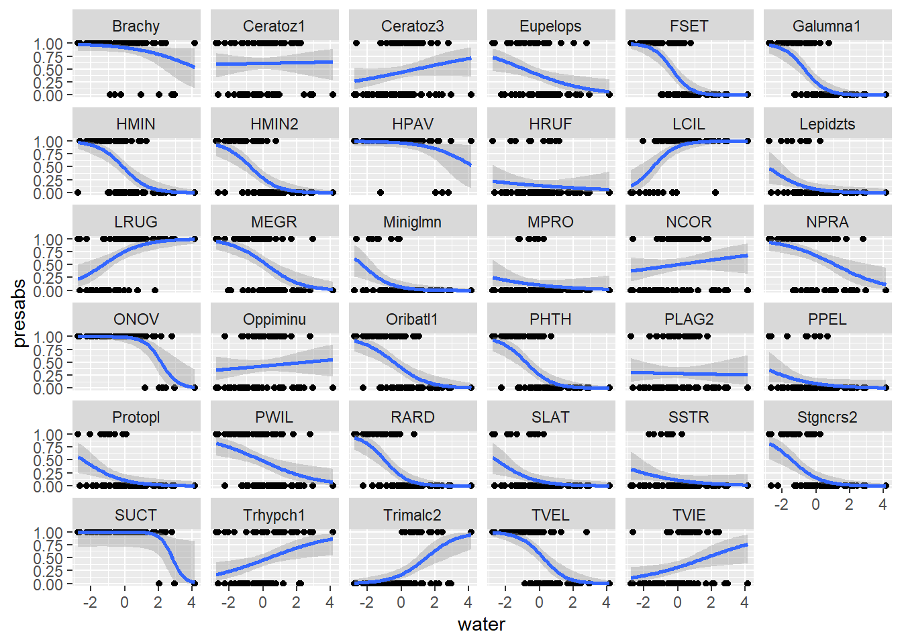
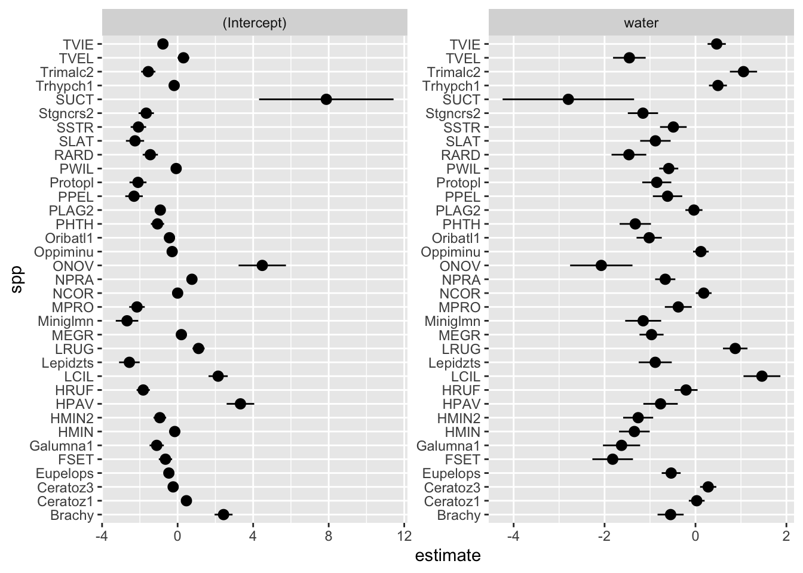
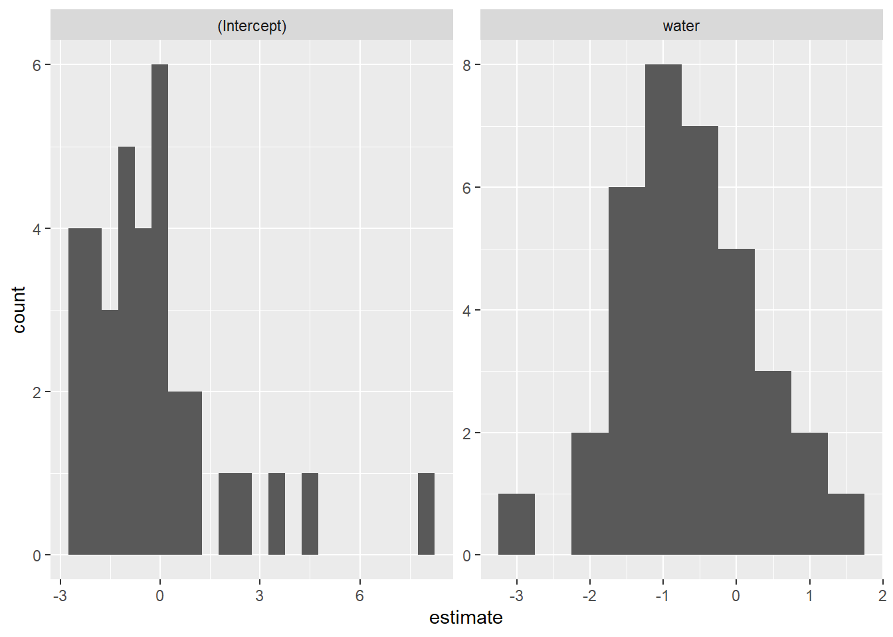

data(mite, package = "vegan")
data("mite.env", package = "vegan")
# combine data and environment
library(tidyverse)
mite_data_long <- bind_cols(mite.env, mite) |>
pivot_longer(Brachy:Trimalc2, names_to = "spp", values_to = "abd")Summarizing many univariate models
A secret weapon for when you’re building hierarchical models.
We’ve already looked at univariate models. When we fit the same model to multiple different groups, we don’t expect the same values for all the coefficients. Each thing we are studying will respond to the same variable in different ways.
Hierarchial models represent a way to model this variation, in ways that range from simple to complex.
Before we dive in with hierarchical structure, let’s build a bridge between these two approaches.
This is useful to help us understand what a hierarchical model does.
However it is also useful from a strict model-building perspective – so useful that Andrew Gelman calls it a “Secret Weapon” tk link
To keep things simple and univariate, let’s consider only water:
First, a quick word about centering and scaling a predictor variable:
- I center the predictor by subtracting the mean. This changes the intercept of my linear predictor. it becomes the mean log-odds of occurrance when the water content is average
- I divide water content by 100. The dataset has units of grams per Litre of water (see
?vegan::mite.envfor more details). This is fine, but I don’t think mites are able to sense differences as precise as a millimeter of water either way. by dividing by 10 I transform this into centilitres, which is more informative.
mite_data_long_transformed <- mite_data_long |>
mutate(presabs = as.numeric(abd>0),
# center predictors
water = (WatrCont - mean(WatrCont)) / 100
)
mite_data_long_transformed |>
ggplot(aes(x = water, y = presabs)) +
geom_point() +
stat_smooth(method = "glm", method.args = list(family = "binomial")) +
facet_wrap(~spp)`geom_smooth()` using formula = 'y ~ x'
some things to notice about this figure:
- the x-axis scale has been transformed from “grams per litre” to “centilitres away from average
- there is a ton of variation in how different species respond to water!
mite_many_glms <- mite_data_long_transformed |>
nest_by(spp) |>
mutate(logistic_regressions = list(
glm(presabs ~ water,
family = "binomial",
data = data))) |>
mutate(coefs = list(broom::tidy(logistic_regressions)))mite_many_glm_coefs <- mite_many_glms |>
select(-data, -logistic_regressions) |>
unnest(coefs)
mite_many_glm_coefs |>
ggplot(aes(x = estimate, y = spp,
xmin = estimate - std.error,
xmax = estimate + std.error)) +
geom_pointrange() +
facet_wrap(~term, scales = "free")
As you can see, some of these estimates are high, others low. We could also plot these as histograms to see this distribution.
mite_many_glm_coefs |>
ggplot(aes(x = estimate)) +
geom_histogram(binwidth = .5) +
facet_wrap(~term, scales = "free")
Once again, the two parameters of this model represent:
- Intercept The probability (in log-odds) of a species being present at the average water concentration. some species are common, others are rare.
- water this is the change in probability (in log-odds) as water increases by one centilitre per litre of substrate.
Say it in Stan
The above tidyverse approach is very appealing and intuitive, but we can also do the same procedure in Stan.
Modelling variation in slopes
Clearly there is variation among species in the values of these parameters. Like all variation, we can develop a scientific model to describe it. The simplest model we’ll consider is a simple univariate distribution.
suppressPackageStartupMessages(library(cmdstanr))
logistic_bern_glm <- cmdstan_model(
stan_file = here::here("topics/secret_weapon_univariate.stan"),
pedantic = TRUE)
mite_bin <- mite
mite_bin[mite_bin>0] <- 1
logistic_bern_glm$sample(data = list(
Nsites = nrow(mite_bin),
K = 2,
S = ncol(mite_bin),
x = cbind(1, with(mite.env, (WatrCont - mean(WatrCont))/100)),
y = as.matrix(mite_bin)
))Running MCMC with 4 sequential chains...
Chain 1 Iteration: 1 / 2000 [ 0%] (Warmup)
Chain 1 Iteration: 100 / 2000 [ 5%] (Warmup)
Chain 1 Iteration: 200 / 2000 [ 10%] (Warmup)
Chain 1 Iteration: 300 / 2000 [ 15%] (Warmup)
Chain 1 Iteration: 400 / 2000 [ 20%] (Warmup)
Chain 1 Iteration: 500 / 2000 [ 25%] (Warmup)
Chain 1 Iteration: 600 / 2000 [ 30%] (Warmup)
Chain 1 Iteration: 700 / 2000 [ 35%] (Warmup)
Chain 1 Iteration: 800 / 2000 [ 40%] (Warmup)
Chain 1 Iteration: 900 / 2000 [ 45%] (Warmup)
Chain 1 Iteration: 1000 / 2000 [ 50%] (Warmup)
Chain 1 Iteration: 1001 / 2000 [ 50%] (Sampling)
Chain 1 Iteration: 1100 / 2000 [ 55%] (Sampling)
Chain 1 Iteration: 1200 / 2000 [ 60%] (Sampling)
Chain 1 Iteration: 1300 / 2000 [ 65%] (Sampling)
Chain 1 Iteration: 1400 / 2000 [ 70%] (Sampling)
Chain 1 Iteration: 1500 / 2000 [ 75%] (Sampling)
Chain 1 Iteration: 1600 / 2000 [ 80%] (Sampling)
Chain 1 Iteration: 1700 / 2000 [ 85%] (Sampling)
Chain 1 Iteration: 1800 / 2000 [ 90%] (Sampling)
Chain 1 Iteration: 1900 / 2000 [ 95%] (Sampling)
Chain 1 Iteration: 2000 / 2000 [100%] (Sampling)
Chain 1 finished in 9.2 seconds.
Chain 2 Iteration: 1 / 2000 [ 0%] (Warmup)
Chain 2 Iteration: 100 / 2000 [ 5%] (Warmup)
Chain 2 Iteration: 200 / 2000 [ 10%] (Warmup)
Chain 2 Iteration: 300 / 2000 [ 15%] (Warmup)
Chain 2 Iteration: 400 / 2000 [ 20%] (Warmup)
Chain 2 Iteration: 500 / 2000 [ 25%] (Warmup)
Chain 2 Iteration: 600 / 2000 [ 30%] (Warmup)
Chain 2 Iteration: 700 / 2000 [ 35%] (Warmup)
Chain 2 Iteration: 800 / 2000 [ 40%] (Warmup)
Chain 2 Iteration: 900 / 2000 [ 45%] (Warmup)
Chain 2 Iteration: 1000 / 2000 [ 50%] (Warmup)
Chain 2 Iteration: 1001 / 2000 [ 50%] (Sampling)
Chain 2 Iteration: 1100 / 2000 [ 55%] (Sampling)
Chain 2 Iteration: 1200 / 2000 [ 60%] (Sampling)
Chain 2 Iteration: 1300 / 2000 [ 65%] (Sampling)
Chain 2 Iteration: 1400 / 2000 [ 70%] (Sampling)
Chain 2 Iteration: 1500 / 2000 [ 75%] (Sampling)
Chain 2 Iteration: 1600 / 2000 [ 80%] (Sampling)
Chain 2 Iteration: 1700 / 2000 [ 85%] (Sampling)
Chain 2 Iteration: 1800 / 2000 [ 90%] (Sampling)
Chain 2 Iteration: 1900 / 2000 [ 95%] (Sampling)
Chain 2 Iteration: 2000 / 2000 [100%] (Sampling)
Chain 2 finished in 9.3 seconds.
Chain 3 Iteration: 1 / 2000 [ 0%] (Warmup)
Chain 3 Iteration: 100 / 2000 [ 5%] (Warmup)
Chain 3 Iteration: 200 / 2000 [ 10%] (Warmup)
Chain 3 Iteration: 300 / 2000 [ 15%] (Warmup)
Chain 3 Iteration: 400 / 2000 [ 20%] (Warmup)
Chain 3 Iteration: 500 / 2000 [ 25%] (Warmup)
Chain 3 Iteration: 600 / 2000 [ 30%] (Warmup)
Chain 3 Iteration: 700 / 2000 [ 35%] (Warmup)
Chain 3 Iteration: 800 / 2000 [ 40%] (Warmup)
Chain 3 Iteration: 900 / 2000 [ 45%] (Warmup)
Chain 3 Iteration: 1000 / 2000 [ 50%] (Warmup)
Chain 3 Iteration: 1001 / 2000 [ 50%] (Sampling)
Chain 3 Iteration: 1100 / 2000 [ 55%] (Sampling)
Chain 3 Iteration: 1200 / 2000 [ 60%] (Sampling)
Chain 3 Iteration: 1300 / 2000 [ 65%] (Sampling)
Chain 3 Iteration: 1400 / 2000 [ 70%] (Sampling)
Chain 3 Iteration: 1500 / 2000 [ 75%] (Sampling)
Chain 3 Iteration: 1600 / 2000 [ 80%] (Sampling)
Chain 3 Iteration: 1700 / 2000 [ 85%] (Sampling)
Chain 3 Iteration: 1800 / 2000 [ 90%] (Sampling)
Chain 3 Iteration: 1900 / 2000 [ 95%] (Sampling)
Chain 3 Iteration: 2000 / 2000 [100%] (Sampling)
Chain 3 finished in 10.0 seconds.
Chain 4 Iteration: 1 / 2000 [ 0%] (Warmup)
Chain 4 Iteration: 100 / 2000 [ 5%] (Warmup)
Chain 4 Iteration: 200 / 2000 [ 10%] (Warmup)
Chain 4 Iteration: 300 / 2000 [ 15%] (Warmup)
Chain 4 Iteration: 400 / 2000 [ 20%] (Warmup)
Chain 4 Iteration: 500 / 2000 [ 25%] (Warmup)
Chain 4 Iteration: 600 / 2000 [ 30%] (Warmup)
Chain 4 Iteration: 700 / 2000 [ 35%] (Warmup)
Chain 4 Iteration: 800 / 2000 [ 40%] (Warmup)
Chain 4 Iteration: 900 / 2000 [ 45%] (Warmup)
Chain 4 Iteration: 1000 / 2000 [ 50%] (Warmup)
Chain 4 Iteration: 1001 / 2000 [ 50%] (Sampling)
Chain 4 Iteration: 1100 / 2000 [ 55%] (Sampling)
Chain 4 Iteration: 1200 / 2000 [ 60%] (Sampling)
Chain 4 Iteration: 1300 / 2000 [ 65%] (Sampling)
Chain 4 Iteration: 1400 / 2000 [ 70%] (Sampling)
Chain 4 Iteration: 1500 / 2000 [ 75%] (Sampling)
Chain 4 Iteration: 1600 / 2000 [ 80%] (Sampling)
Chain 4 Iteration: 1700 / 2000 [ 85%] (Sampling)
Chain 4 Iteration: 1800 / 2000 [ 90%] (Sampling)
Chain 4 Iteration: 1900 / 2000 [ 95%] (Sampling)
Chain 4 Iteration: 2000 / 2000 [100%] (Sampling)
Chain 4 finished in 12.8 seconds.
All 4 chains finished successfully.
Mean chain execution time: 10.3 seconds.
Total execution time: 42.0 seconds. variable mean median sd mad q5 q95 rhat ess_bulk ess_tail
lp__ -1171.18 -1170.78 8.32 8.07 -1185.34 -1157.97 1.00 643 1511
z[1,1] 1.67 1.65 0.36 0.36 1.11 2.29 1.00 1214 2032
z[2,1] 0.04 0.04 0.39 0.37 -0.62 0.67 1.00 2184 2490
z[1,2] -0.41 -0.40 0.26 0.25 -0.86 0.00 1.00 839 1684
z[2,2] -0.92 -0.90 0.43 0.41 -1.68 -0.26 1.00 2123 2361
z[1,3] 2.06 2.04 0.42 0.41 1.41 2.80 1.00 1256 2335
z[2,3] -0.10 -0.09 0.42 0.40 -0.81 0.58 1.00 2376 2473
z[1,4] -0.62 -0.61 0.28 0.28 -1.09 -0.17 1.00 706 1606
z[2,4] -1.04 -1.02 0.45 0.44 -1.80 -0.36 1.00 1918 2508
z[1,5] -1.07 -1.06 0.32 0.32 -1.61 -0.57 1.01 770 1442
# showing 10 of 145 rows (change via 'max_rows' argument or 'cmdstanr_max_rows' option)let’s take a look at these values:
data("mite.xy", package = "vegan")
mite.xy x y
1 0.20 0.1
2 1.00 0.1
3 1.20 0.3
4 1.40 0.5
5 2.40 0.7
6 1.80 0.9
7 0.05 1.1
8 2.00 1.3
9 2.00 1.5
10 1.20 1.7
11 2.40 1.9
12 0.20 2.1
13 0.40 2.1
14 2.00 2.3
15 2.20 2.3
16 0.05 2.7
17 0.20 2.7
18 2.20 2.7
19 2.40 2.7
20 1.20 2.9
21 0.05 3.1
22 1.40 3.1
23 2.40 3.1
24 0.20 3.5
25 1.20 3.7
26 0.80 3.9
27 1.60 3.9
28 0.20 4.1
29 0.80 4.1
30 1.80 4.5
31 0.20 4.7
32 1.40 4.7
33 0.60 5.3
34 1.00 5.3
35 2.40 5.3
36 1.40 5.5
37 1.80 5.5
38 0.40 5.9
39 1.00 5.9
40 1.80 5.9
41 2.00 5.9
42 0.05 6.1
43 0.20 6.1
44 0.40 6.1
45 1.20 6.1
46 1.60 6.1
47 1.60 6.3
48 0.40 6.5
49 1.80 6.7
50 0.60 6.9
51 2.00 7.1
52 0.05 7.3
53 0.40 7.3
54 1.40 7.5
55 2.20 7.5
56 0.20 7.9
57 1.60 7.9
58 2.40 7.9
59 0.05 8.1
60 1.20 8.1
61 1.40 8.1
62 2.00 8.1
63 1.60 8.5
64 1.60 8.7
65 1.00 8.9
66 1.60 8.9
67 2.40 9.1
68 2.20 9.3
69 1.80 9.5
70 0.40 9.7nrow(mite)[1] 70